Panduan Penggunaan BelajarPlus
Pilih jenis akun kamu di bawah ini untuk melihat panduan urut dan terarah sesuai kebutuhan peranmu.
Pendaftaran & Aktivasi Akun Siswa
Registrasi AkunBuka tautan registrasi belajarplus.id/auth dan pilih tab "Daftar". Pilih peran Siswa untuk membuat akun baru.
- Sekolah Mitra — Masukkan Kode Sekolah (`SKL-XXXXX`) dari admin/guru sekolahmu.
- Umum — Pilih opsi ini jika mendaftar secara mandiri tanpa kode sekolah.
- Pilih Jenjang (SD/SMP/SMA/SMK), Kelas (10, 11, 12), dan Rombel.
- Verifikasi Email & OTP 6-Digit — Pastikan email aktif. Periksa kotak masuk/Spam untuk mengeklik tombol verifikasi atau memasukkan Kode OTP agar akun aktif sepenuhnya.
- Opsional: Masukkan Kode Kelas Guru (`BLJ-XXXXXX`) agar otomatis masuk ke kelas gurumu.

Login ke Akun Siswa
Masuk AplikasiSetelah akun terdaftar, login menggunakan alamat email terdaftar dan password kamu. Masuk ke halaman dashboard Pembelajaran Saya.
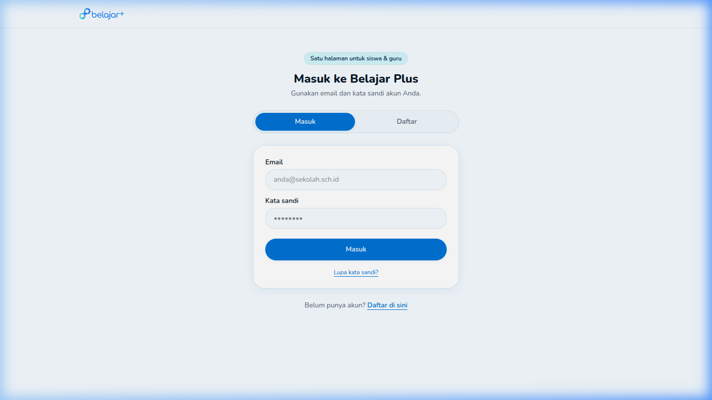
Mengenal Dashboard Siswa Secara Detail
Dashboard UtamaHalaman Dashboard (Pembelajaran Saya) adalah pusat kendali utama (Command Center) untuk semua kegiatan belajarmu. Di bagian atas, kamu akan disambut dengan statistik singkat terkait aktivitas terbarumu. Melalui halaman ini, kamu tidak perlu repot membuka menu satu per satu karena semua ringkasan penting—mulai dari tugas mendesak, notifikasi ujian baru, hingga histori nilai—sudah disajikan dalam satu layar yang responsif.
Gunakan navigasi sidebar di sebelah kiri untuk berpindah menu utama dengan cepat, dan perhatikan ikon lonceng di sudut kanan atas untuk melihat pemberitahuan sistem atau pengumuman dari admin sekolah.
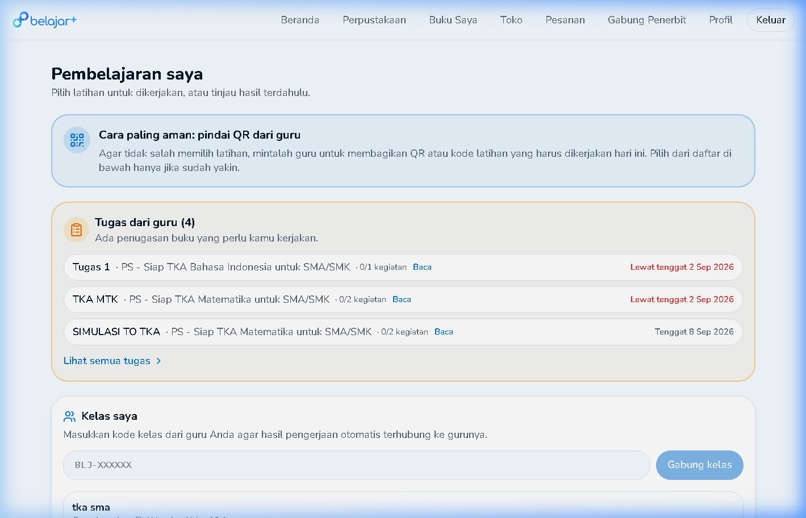
Tugas dari Guru & Manajemen Waktu
DashboardKolom Tugas dari Guru adalah tempat kamu memantau semua kewajiban akademis (seperti TKA, UTS, atau Latihan Harian). Setiap kartu tugas dilengkapi dengan indikator warna status yang sangat informatif:
- Abu-abu / Belum Dikerjakan: Tugas baru masuk, perhatikan tanggal tenggat waktu (deadline).
- Kuning / Waktu Hampir Habis: Peringatan bahwa deadline sudah di depan mata.
- Hijau / Selesai: Tugas telah kamu kumpulkan dan nilainya sedang diproses atau sudah keluar.
Untuk mulai mengerjakan, klik tombol "Kerjakan". Pastikan kamu siap sebelum menekan tombol tersebut karena durasi timer akan langsung berjalan mundur.
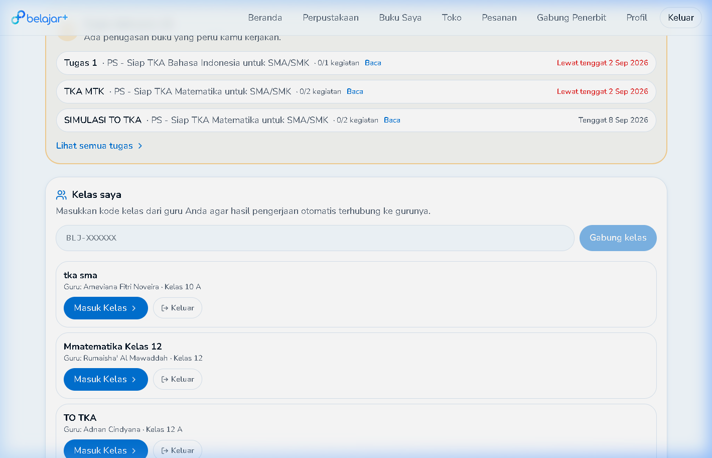
Manajemen "Kelas Saya" (Bergabung ke Rombel)
DashboardFitur Kelas Saya berfungsi untuk mendaftarkan akunmu ke dalam rombongan belajar (Rombel) yang diampu oleh gurumu. Tanpa masuk ke dalam kelas, kamu tidak akan bisa menerima tugas spesifik yang diberikan secara *private* oleh guru mata pelajaran.
Untuk bergabung dengan kelas baru, cukup ketikkan Kode Kelas Unik (6 digit alfanumerik, misal: BLJ-X9A2B) yang diberikan oleh guru ke dalam kolom input, lalu klik tombol panah. Setelah berhasil, kelas tersebut akan langsung muncul di daftar kelas aktif di bagian bawah layar beserta nama guru pengampunya.

Latihan Mandiri Tersedia & Analisa Hasil Terbaru
DashboardBosan menunggu tugas? Kamu bisa belajar secara proaktif melalui menu Latihan Tersedia. Ini adalah bank soal terbuka dari server sekolah. Cukup ketik topik atau mata pelajaran di bilah pencarian, dan sistem akan menyajikan kuis singkat untuk menguji pemahamanmu.
Setelah selesai, cek modul Hasil Terbaru. Sistem LJD tidak hanya memberikan angka mentah, tetapi juga menyajikan persentase ketuntasan (skor). Kamu dapat melihat dengan jelas kapan kamu lulus KKM (Kriteria Ketuntasan Minimal) yang ditandai dengan warna hijau pada bar progres. Klik *detail* pada skor untuk melihat rincian soal mana saja yang salah dijawab.
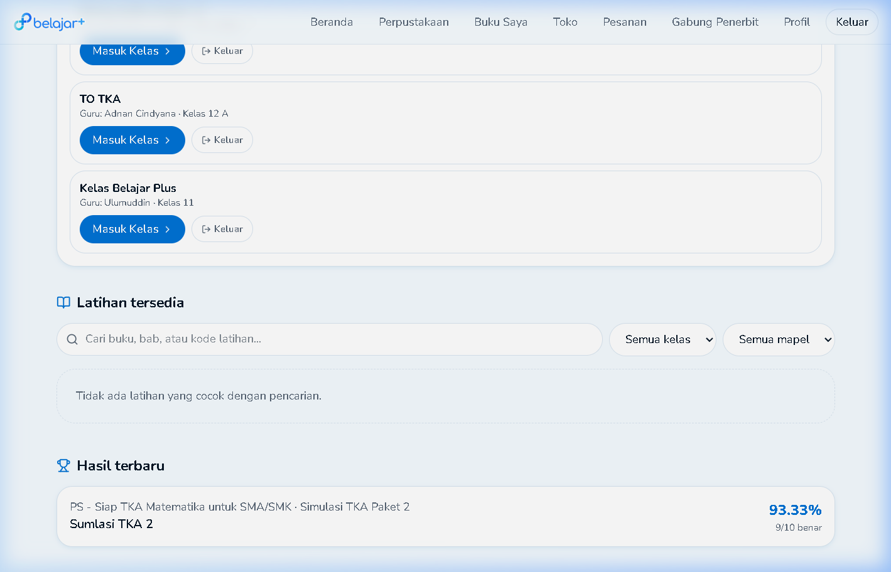
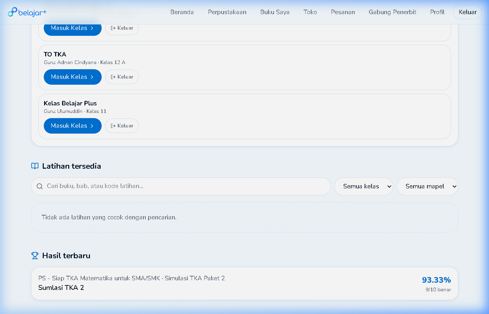
Mencari Buku di Ekosistem Perpustakaan Digital
PerpustakaanMenu Perpustakaan adalah jantung literasi digitalmu. Di sini, ribuan e-book dan modul dari Kemendikbud maupun penerbit swasta tersedia untuk dipinjam secara gratis (selama kuota lisensi sekolah masih ada).
Untuk pencarian yang akurat, jangan hanya mengandalkan kolom search teks. Gunakan panel Filter Jenjang (misal: pilih SMA Kelas 11) yang dikombinasikan dengan Filter Mata Pelajaran (misal: Biologi). Dengan kombinasi ini, rak buku akan langsung menampilkan koleksi yang 100% relevan dengan kebutuhan belajarmu.

Menavigasi E-Reader Interaktif
PerpustakaanSetelah menemukan buku yang tepat, klik sampulnya untuk membaca sinopsis, data penerbit, dan ISBN. Jika tertarik, tekan tombol "Baca Buku" untuk meluncurkan antarmuka E-Reader Web canggih milik BelajarPlus.
E-Reader ini didesain agar mata tidak cepat lelah. Kamu dapat menggunakan tombol panah Kiri/Kanan di keyboard atau slider di layar bawah untuk berpindah halaman secara instan. Sistem kami menggunakan sinkronisasi Cloud—artinya, progress halaman yang sedang kamu baca akan disimpan otomatis. Jika kamu menutup browser dan membukanya lagi esok hari, e-reader akan langsung melompat ke halaman terakhir yang kamu tinggalkan.
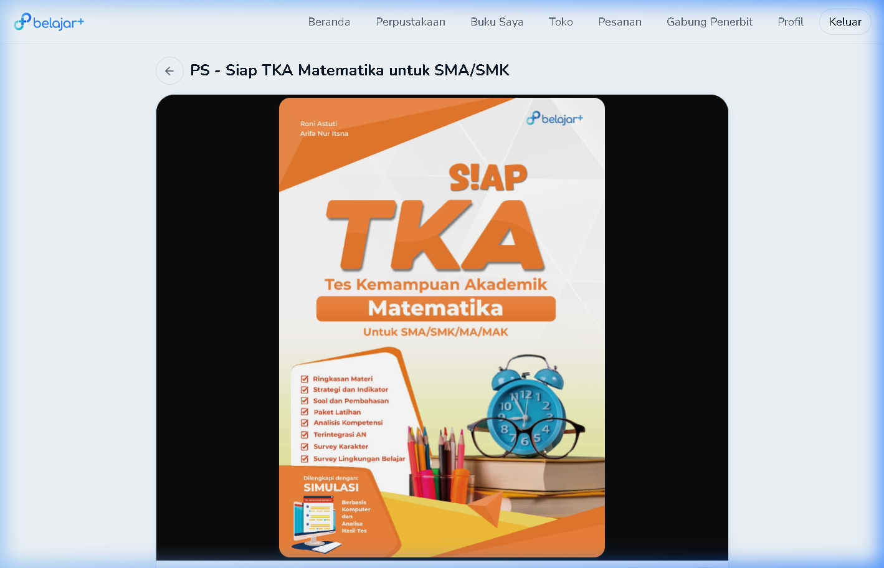
Manajemen "Buku Saya" (Pinjaman & Antrean)
Koleksi SiswaDi halaman Buku Saya, kamu bisa melacak status semua buku digital yang sedang aktif di akunmu. Karena lisensi buku digital sekolah mungkin terbatas (misalnya sekolah hanya punya 50 eksemplar digital untuk buku fisika), maka sistem memberlakukan masa pinjam (umumnya 7 - 14 hari).
Jika kuota buku di perpustakaan habis dipinjam siswa lain, buku yang kamu pilih akan masuk ke tab Antrean. Begitu siswa lain mengembalikan bukunya, buku tersebut otomatis masuk ke tab Dipinjam kamu. Jangan lupa klik "Kembalikan" jika kamu sudah selesai membaca sebelum masa tenggang habis agar adik kelas atau temanmu bisa bergantian meminjam.

Kelas & Aturan Ketat Lembar Jawab Digital (LJD)
Penugasan & UjianMasuk ke menu ruang kelas secara spesifik akan menampilkan 3 tab utama: Pengumuman Kelas (pesan dari guru), Sumber Belajar (buku teks wajib yang di-pin oleh guru), dan Aktivitas Belajar.
Saat kamu menekan tombol "Mulai Ujian" di tab Aktivitas, layar akan terkunci pada mode LJD (Lembar Jawab Digital). Sangat disarankan untuk tidak berpindah tab browser, menutup aplikasi, atau menekan tombol Back di browser karena sistem keamanan *anti-cheat* bisa mendeteksinya sebagai pelanggaran dan men-submit ujianmu secara paksa (nilai hangus).

Eksplorasi Toko & Riwayat Pesanan Mandiri
MarketplaceBagaimana jika kuota buku sekolah sudah penuh, namun kamu sangat membutuhkan buku tersebut untuk ujian besok? BelajarPlus menyediakan menu Toko (Marketplace). Melalui menu ini, kamu bisa membeli lisensi buku secara pribadi atau membeli paket Tryout Premium khusus SNBT/UTBK.
Pilih produk yang kamu inginkan, masukkan ke keranjang belanja, dan lakukan proses *Checkout* menggunakan *payment gateway* (QRIS, Virtual Account, dsb). Setelah pembayaran sukses terkonfirmasi, kamu bisa mengecek *invoice* (faktur digital) dan status resi aktivasi produkmu secara real-time di menu Pesanan Saya.
belajarplus.id/orders secara manual di *address bar* browsermu. Melakukan hal tersebut (meskipun statusmu masih login) akan membuat sistem keliru mendeteksi *session* dan melemparmu kembali ke halaman *Login* secara berulang-ulang (*looping*). Selalu gunakan tombol menu di sidebar!
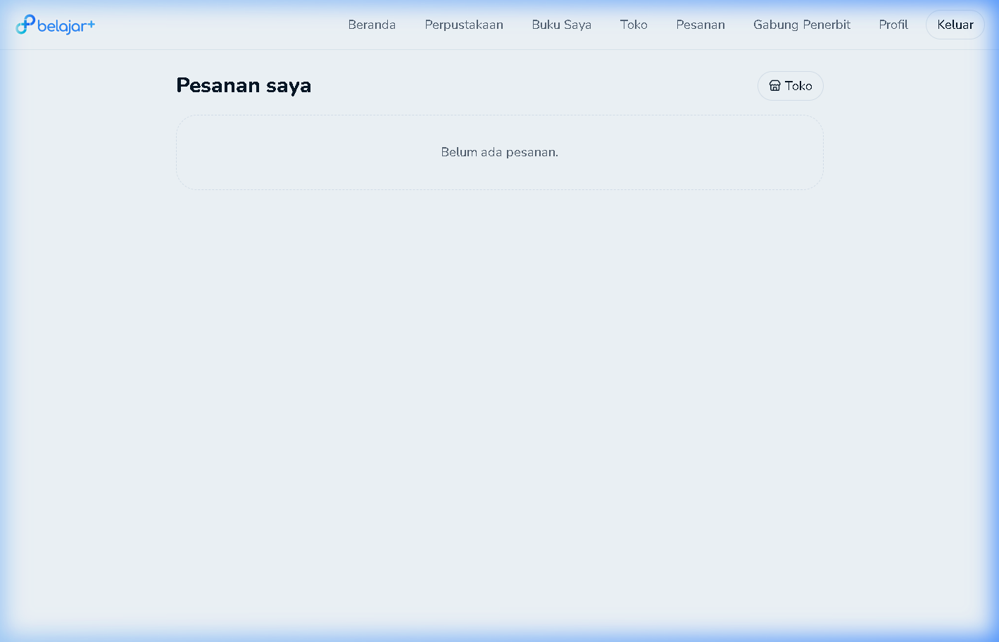
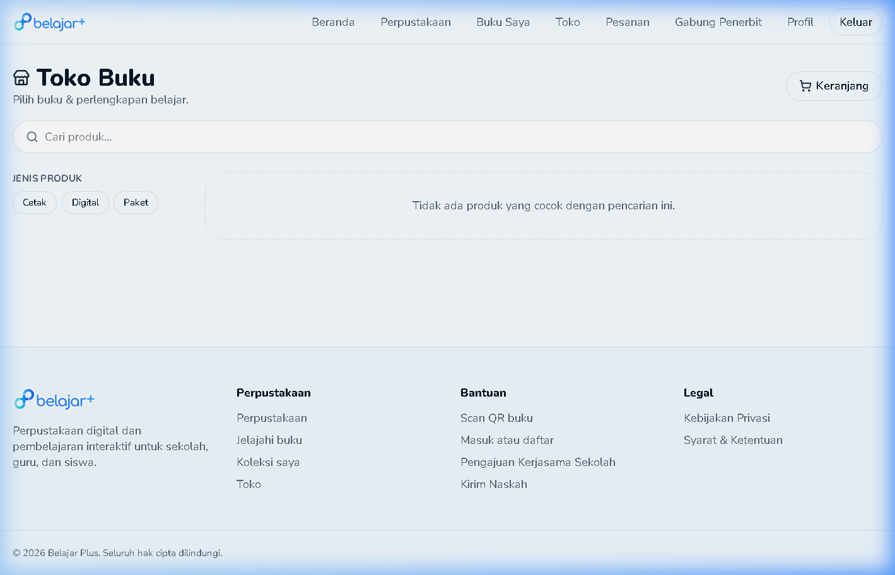
Pengaturan Akun & Profil Saya
AkunLangkah terakhir namun tidak kalah penting adalah mengatur identitas digitalmu. Buka menu Profil Saya (biasanya dari *dropdown* avatar di sudut kanan atas). Di sini kamu wajib mengisi dan melengkapi data dasar seperti Foto Avatar (wajah jelas), Nama Lengkap, Nomor Induk Siswa Nasional (NISN), dan Nomor WhatsApp aktif.
Data profil yang akurat sangat krusial karena server BelajarPlus akan melakukan sinkronisasi otomatis (*auto-sync*) dengan Data Pokok Pendidikan (Dapodik) dari pusat admin sekolah. Kamu juga bisa mengganti kata sandi (password) akunmu di menu ini kapan saja untuk menjaga keamanan privasi belajarmu.
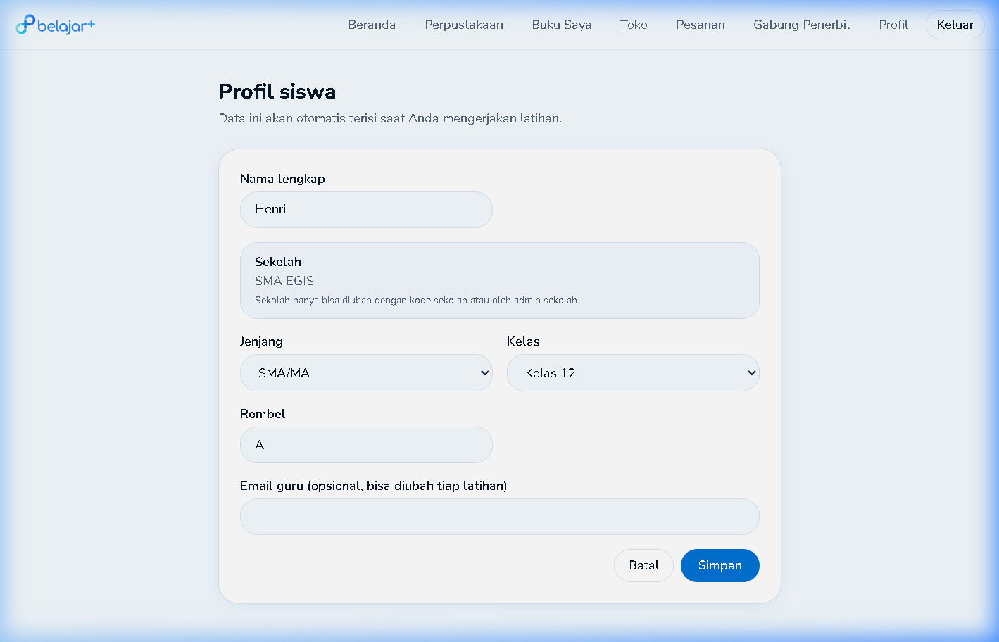
Pendaftaran & Verifikasi Akun Guru
Registrasi PengajarBuka belajarplus.id/auth, pilih tab "Daftar", dan pilih peran Guru.
- Masukkan Kode Sekolah Mitra (`SKL-XXXXX`) tempat kamu mengajar.
- Isikan Nomor WhatsApp aktif (`08xxxxxxxxxx`) untuk notifikasi & konfirmasi kelas.
- Pilih Jenjang Sekolah dan centang Tingkatan Kelas yang Diajar (misal: Kelas 10, 11, 12).
- Isikan Email Pengajar & Password, lalu klik "Buat akun guru".
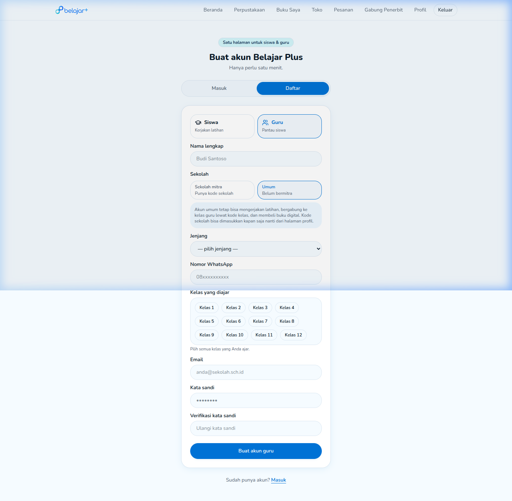
Login & Akses Dashboard Guru
Panel GuruLogin menggunakan akun pengajar BelajarPlus yang terdaftar. Masuk ke halaman Dashboard Pengajar untuk mengelola kelas dan materi pembelajaran sekolah.
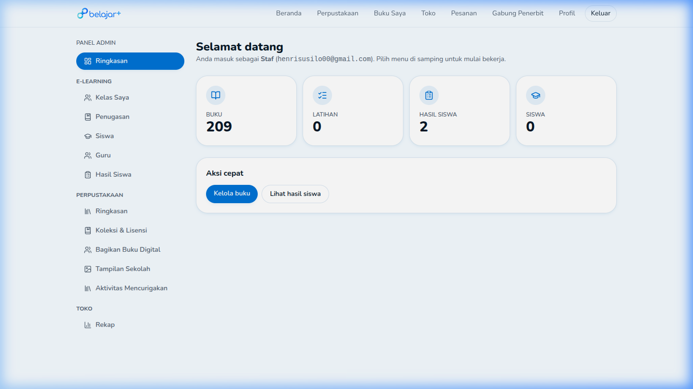
Buat & Kelola Ruang Kelas
Manajemen KelasBuka menu "Kelas Saya" untuk membuat kelas baru (misal: Kelas 11 Biologi or Kelas 12 TKA Matematika). Tambahkan siswa terdaftar ke dalam rombel kelasmu.
- Atur nama kelas, tingkatan jenjang, dan mata pelajaran
- Undang siswa menggunakan Kode Kelas unik atau assign otomatis
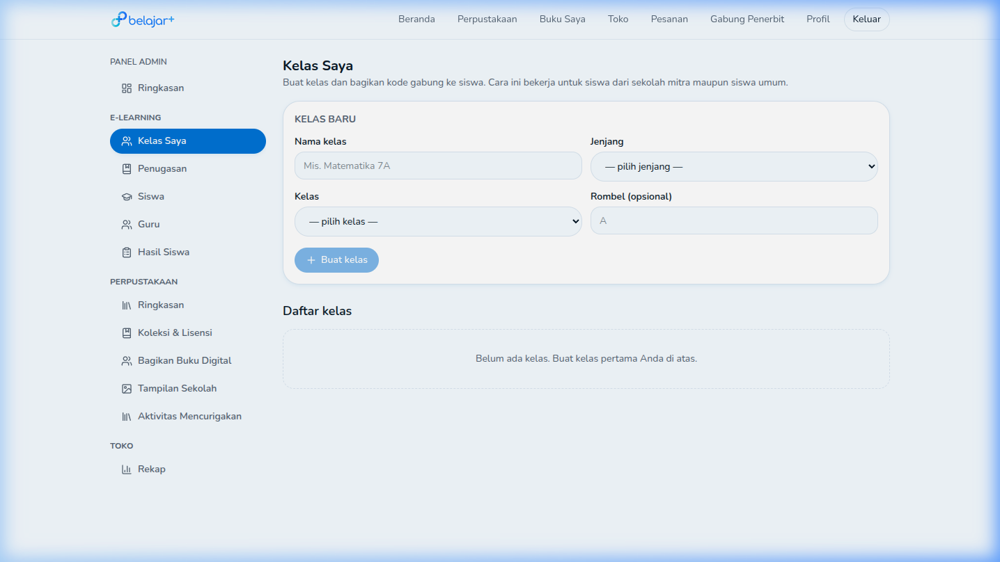
Hubungkan Buku Acuan Pembelajaran
Sumber BelajarPada tab "Sumber Belajar" di dalam kelas, pilih buku acuan utama dari perpustakaan digital sekolah yang menjadi bahan bacaan wajib siswa.
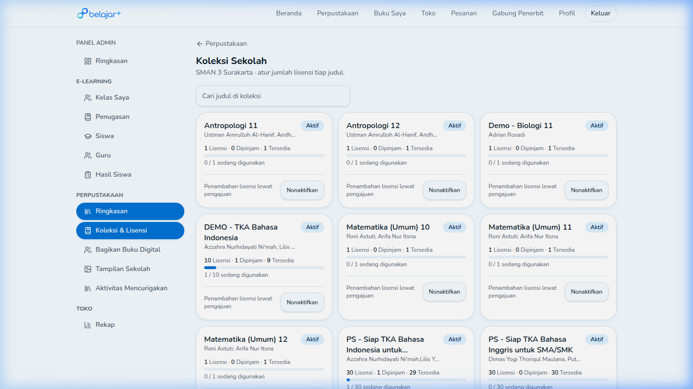
Buat Penugasan & Lembar Jawab Digital (LJD)
Asesmen & KuisBuka tab "Penugasan" lalu buat penugasan baru. Pilih modul asesmen (Asesmen Formatif, Sumatif, Tryout TKA) dan tentukan tenggat waktu pengumpulan (deadline).
- Tentukan bobot nilai per aktivitas
- Aktifkan mode pengawasan kejujuran (anti-cheat focus tracking)
- Atur tanggal publikasi dan batas waktu pengerjaan
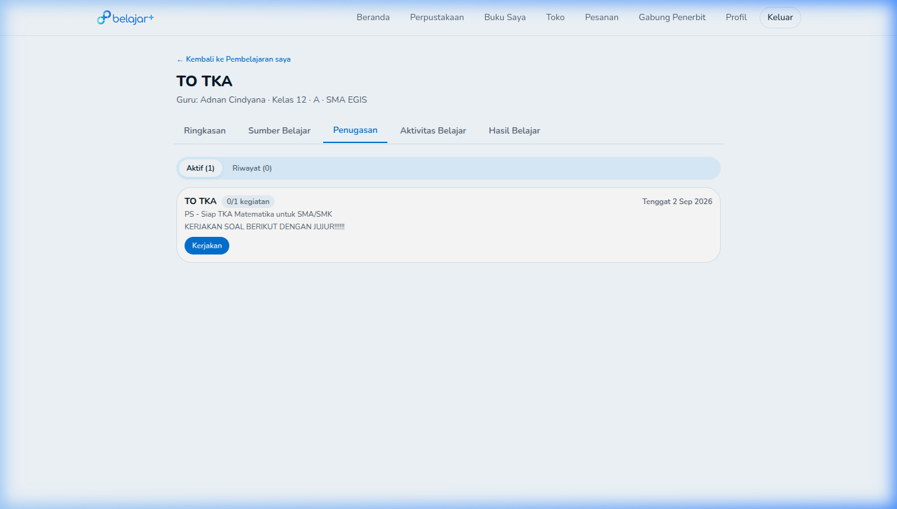
Pantau Transkrip Nilai & Hasil Belajar Real-time
Gradebook & AnalitikPantau hasil pengerjaan kuis siswa secara real-time di tab "Hasil Belajar". Guru dapat melihat rincian skor per siswa, statistik ketuntasan minimal (KKM), dan analisis komparatif kompetensi bab.

Registrasi Instansi & Pengajuan Kode Sekolah Mitra
Pendaftaran SekolahSekolah / Institusi baru mendaftarkan lembaganya melalui koordinasi dengan BelajarPlus untuk mendapatkan Kode Sekolah Mitra resmi (`SKL-XXXXX`).
- Mengajukan pendaftaran akun Admin Sekolah / Kepala Sekolah.
- Menerima Kode Sekolah Mitra unik untuk dibagikan ke semua Guru & Siswa.
- Aktivasi lisensi koleksi buku digital perpustakaan sekolah.
Monitoring Dashboard Analitik Sekolah
Executive SummaryLogin ke akun Admin / Kepala Sekolah untuk memantau ringkasan performa perpustakaan digital dan keaktifan pembelajaran sekolah secara menyeluruh.
- Total buku digital dipinjam bulan ini
- Statistik siswa & guru paling aktif
- Grafik minat baca per jenjang dan mata pelajaran
Manajemen Lisensi & Koleksi Sekolah
Stok Buku DigitalBuka menu "Koleksi Sekolah" untuk mengelola jumlah lisensi (eksemplar digital) buku teks dan buku pendamping yang dimiliki sekolah.
Pengelolaan Data Pengguna & Pembagian Rombel
User ManagementKelola data guru pengajar, akun siswa per kelas, dan staf perpustakaan. Impor data pengguna sekolah secara kolektif menggunakan berkas spreadsheet.
Pengadaan Buku via Portal Toko / Penerbit
Pengadaan BukuBuka menu "Toko / Penerbit" untuk mengajukan pengadaan judul buku baru atau bekerja sama langsung dengan mitra penerbit resmi.
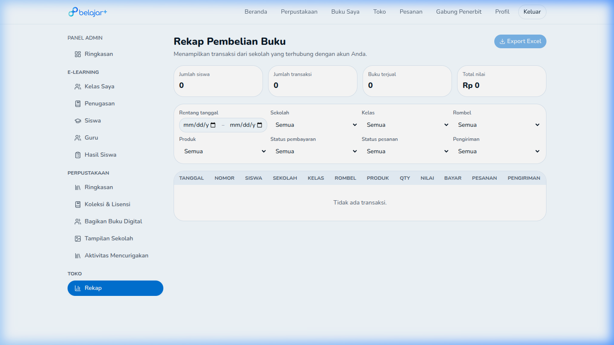
Audit Keamanan & Laporan Evaluasi Periodik
Laporan EksekutifUnduh laporan bulanan untuk keperluan akreditasi sekolah, audit perpustakaan, dan evaluasi capaian kurikulum digital.